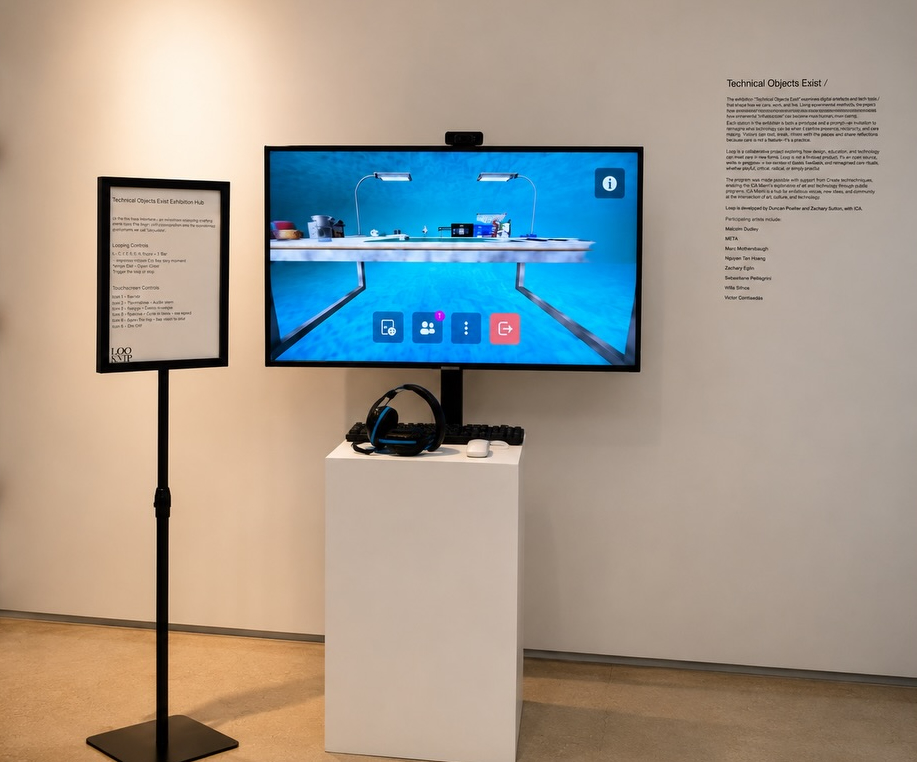

Catalog · Loop Art Critique 2026 · ICA Miami · Cohort #21
Loop Art Critique
All Loop 2026 project files — Machine Aesthetic walkthrough, critique hub, Bloom prototypes, April sketches. Listed on the main catalog. Submission & series guide.

Enter the work
- Machine Aesthetic — Ghost 77823 walkthroughmachine-aesthetic/ghost_dense_77823_room.html
- Critique hub (presentation)critique-hub.html
- Loop Art Critique — Combined Flowapril-25/loop-art-critique-combined.html
Machine Aesthetic
- Machine Aesthetic — series indexmachine-aesthetic/index.html
- Counterproduction essay (PDF)machine-aesthetic/counterproduction-essay-v2.pdf
April 25 sketches
- Technical Surrenderapril-25/loop-art-critique-technical-surrender.html
- Machine Aesthetic — Loop Art Critiqueapril-25/machine-aesthetic.html
- Machine Aesthetic — Fullapril-25/machine-aesthetic-full.html
- Project summaryapril-25/project-summary (1).html